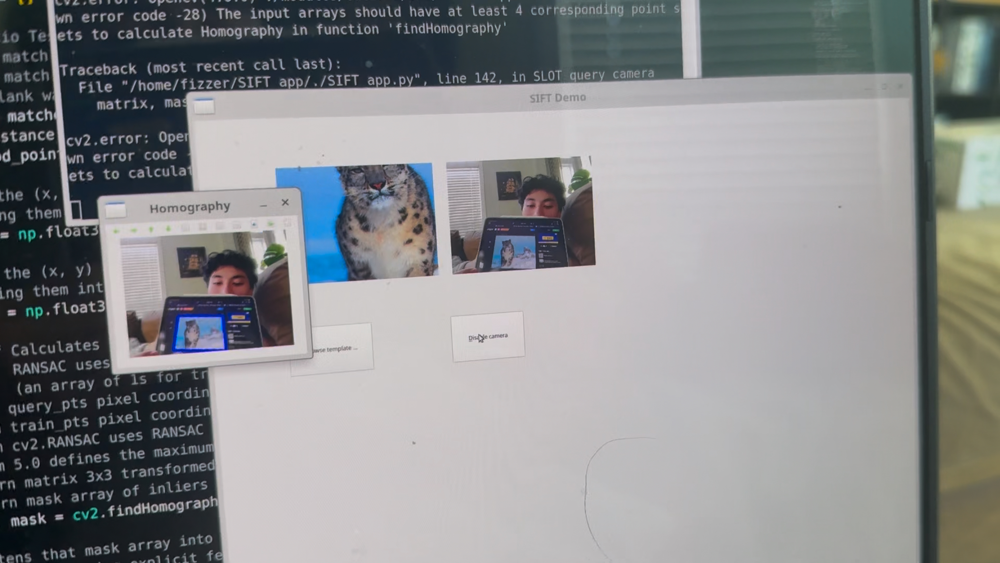
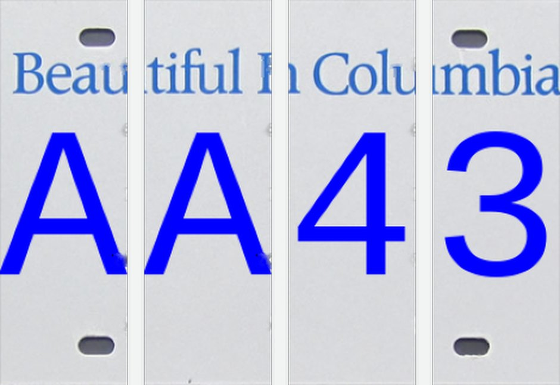

Robot learning in simulation
ENPH 353 is UBC’s robotics and machine learning course. We program simulated robots in ROS 2 and Gazebo, build up from classical computer vision to neural networks and learned controllers, and finish with a driving competition.
- Course
- ENPH 353, robotics and machine learning
- Dates
- September 2026 to present
- Status
- In progress; competition results to come
- Tools
- Python, ROS 2, Gazebo, URDF/Xacro, OpenCV, PyTorch, Keras, Gymnasium, TensorBoard, PyQt5, Linux, Git
Line following with ROS 2 and OpenCV
I started with recorded video: an OpenCV program that finds the line in each frame of a driving video and marks its position. Then I moved the same idea onto a simulated robot. In ROS 2 and Gazebo, I finished the robot’s description by adding its two wheels and a differential-drive plugin, connected Gazebo’s topics to ROS 2, and set it loose on a track modelled on the Monza circuit.
The controller is a Python ROS 2 node. It subscribes to the robot’s camera, thresholds each frame and scans a row of pixels to find the line, and a proportional controller publishes Twist steering commands. When the robot loses the line, it slows down until it finds it again.
Feature matching in a live webcam feed
I built a PyQt5 desktop app that finds a template image in a 10 FPS webcam feed. It detects SIFT features, matches them with FLANN, and uses a RANSAC homography to outline the template in each frame.

A neural network from scratch
To understand what deep learning frameworks do underneath, I built a small autograd engine and neural network following Andrej Karpathy’s micrograd, and checked my gradients against PyTorch.
Reading licence plates with a CNN
The competition’s clue boards use 36 characters, A to Z and 0 to 9, so this lab was practice for reading them. I generated 1,000 random plates with two letters and two digits on a blank B.C. plate template, cut each plate into its four character slots, and labelled each crop with a one-hot vector over the 36 classes. That gave about 4,000 training images.

I adapted a convolutional network in Keras for the job: two convolution and max-pooling stages, then dropout and two dense layers ending in a 36-way softmax. Trained with RMSprop for 20 epochs, it reached 100% validation accuracy within a couple of epochs. On a separate set of 100 test plates, it read only 79% of the characters correctly.
97.5%of test letters read correctly (195 of 200)
61%of test digits read correctly (122 of 200)
- Correct (on the diagonal)
- Misread
The letters were nearly perfect, but almost every error was a digit, usually read as a character with a similar shape: 1 as I or L, 7 as T, 2 as 7, 6 as G. Digits had the most training examples, about 200 each against about 75 per letter, so the problem wasn’t the amount of data. The network had only ever trained on perfect, identical renderings, and the test plates were less clean, so small shifts and tilts were enough to throw it off. The fix is to make the training data look more like the real input, with random rotation, blur, noise, and brightness changes. That lesson carries straight into the competition, where the robot sees clue boards through its own camera rather than straight on.
Q-learning a line follower
Back in simulation, I trained a tabular Q-learning agent to follow a line by itself, through a Gymnasium interface to Gazebo Sim that pauses the simulation, takes an observation, applies an action, and resets the robot whenever it loses the line. The state comes from the camera: I split each frame into three zones and used whichever zone contains the line. The agent chooses between three steering actions, explores with an epsilon-greedy policy, and updates its Q-table with the Bellman equation. I wrote the reward function, tracked reward per episode in TensorBoard, and saved the best-performing Q-table.
Balancing an inverted pendulum with deep RL
Next, we combined reinforcement learning with a neural network to control an unstable system: a cart on a rail in Gazebo that has to keep a hinged pole upright. The agent doesn’t use the camera here. It reads four numbers from the joint states, the cart’s position and velocity and the pole’s angle and angular velocity, and a small fully connected network in PyTorch maps them straight to an action: nudge the cart’s velocity left or right. Unlike the Q-table, the network outputs the policy directly.
I trained it with the cross-entropy method. The agent runs a batch of episodes with its current network and scores a point for every step the pole stays upright. Only the top-scoring “elite” episodes are kept, and the network is trained to repeat the actions taken in them. Each round, the policy does a little better than the last, and I tracked the rewards in TensorBoard.
The competition (in progress)
The course ends with Fizz Detective, a competition between teams of two. In a four-minute round in Gazebo, our robot has to drive a course using only its camera, stay on the road, avoid a pedestrian and a truck, and read eight clue boards of up to 12 characters each. Correct clues earn points; leaving the road and collisions cost them. The rules require us to design and train our own neural networks rather than use pre-trained text recognition, and to keep the simulation running at least half as fast as real time, so the models also have to be cheap to run.
My partner and I are now building it in PyTorch: a detector that finds clue boards in the camera image, a CNN that reads their characters, and a driving policy that learns from camera images through imitation and reinforcement learning. I’ll add results here after the competition.